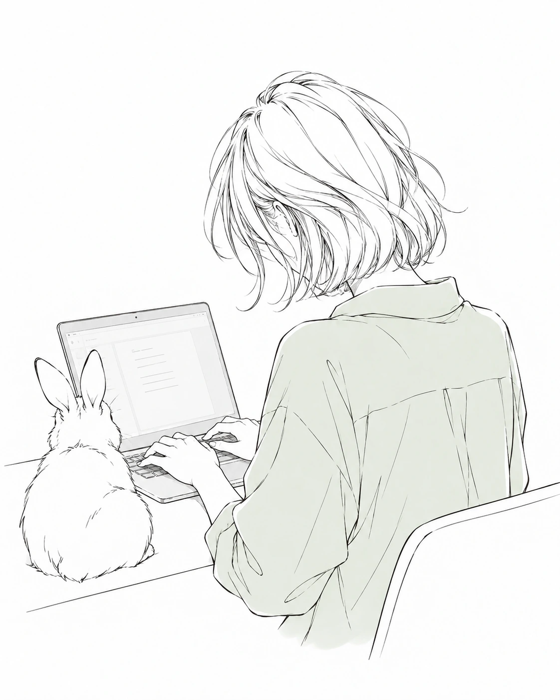
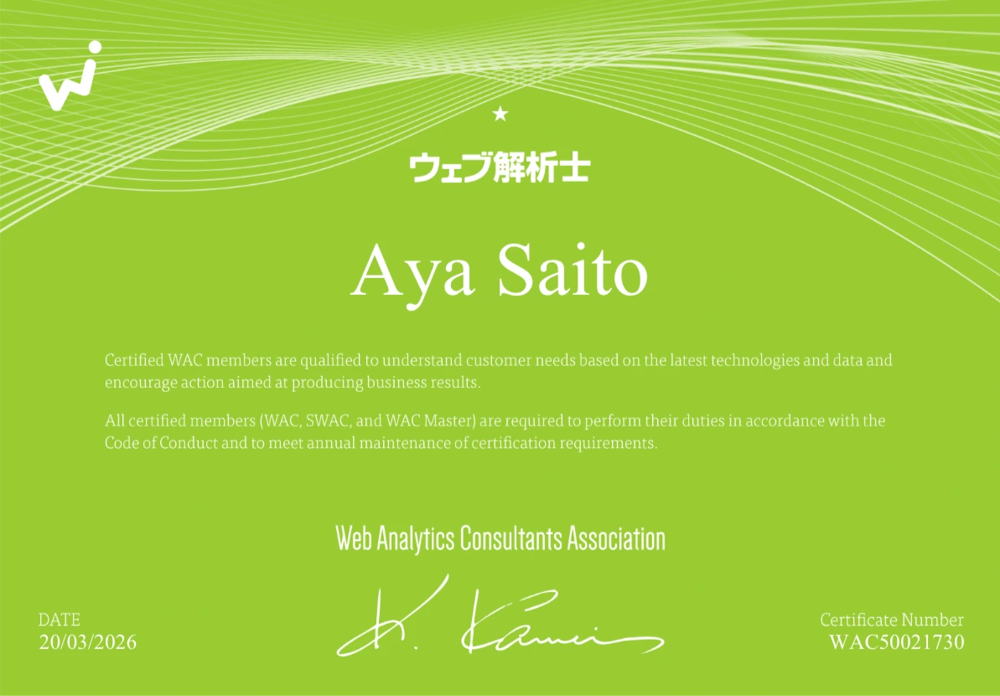
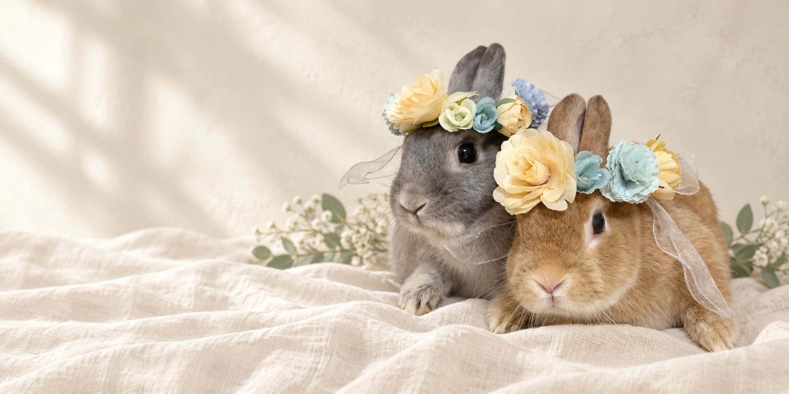

ONBOARDING / 2026.05–
オンボーディング支援
入社する人が必要な情報を受け取れる流れを考え、社内ルールや面談手順の整理を支援しています。
Design & Website
Hiroshima, Japan

Web・グラフィックデザイナーの斎藤 彩です。ディレクションやカスタマーサポートも経験し、使う人の声を制作に生かしてきました。時間や予算の制約があっても工夫を重ね、よりよい方法を探すことを大切にしています。現在は株式会社Reachでデザインを担当し、技術の学びにも取り組んでいます。
2026 / 株式会社Reach
SUPPORT & STUDY
EARLIER PROJECTS
Webサイト・広告・紙面・ロゴなどの制作実績
PERSONAL PROJECTS
TOOLS & LEARNING
Web・ロゴ・紙面・スライドなど
目的に合わせた情報整理と視覚表現
WebサイトやECの制作・更新
公開後の運用を支える資料づくり
スケジュール管理と関係者との調整
ヒアリング・構成検討・改善の支援

2026年3月20日／分析と改善への理解を深めるために学習

DESIGN WITH CARE
伝えたいことを
相手に届くかたちへ
ABOUT / AYA SAITO
斎藤 彩
Web・グラフィックデザイナー
現職：株式会社Reach / 2026年3月入社
制作の道へ進むきっかけは雑貨店で働いていた頃に出会ったWebサイトでした。遊園地のように楽しいお店を画面でも表現できることに惹かれて独学を始め、Web・ECサイトから番組コンテンツや紙媒体へと仕事の幅を広げてきました。
ディレクションやカスタマーサポートでは相手の話を聞くことを大切にしてきました。予算や時間を踏まえてできることを考える姿勢は現在も変わらず、Reachで企画の整理から制作・改善まで携わっています。エンジニアリングやAIの活用も学びながら表現の幅を広げています。
Wantedlyでプロフィール・インタビューを見る ↗EXPERIENCE
Web・グラフィックデザイナーとして顧客案件と自社の採用広報を担当し、ヒアリングから情報整理・デザイン・改修まで携わりました。ヒアリングによる要望の整理からスケジュール管理・関係者との調整まで担当しました。
制作に加えて社内資料の整備やオンボーディングフローの検討も支援しました。エンジニア育成の勉強会にも参画し教材の改善とアプリ制作に取り組みました。
2026年6月19日 1Q全社会でスタートダッシュ賞を受賞しました。
Webデザイナーとカスタマーサポートを兼任して顧客向けホームページの制作・更新対応・運営講習を担当しました。
在籍中に関わった制作案件 35件以上
自社サイトや楽天を含む複数のECサイトを同時に運営し、販売状況や施策に合わせてリアルタイムで更新・管理しました。商品ページ・販促バナー・キャンペーン画像の制作から各サイトへの反映まで担当しました。
ディレクター兼デザイナーとして制作進行とデザインを担当しました。プロジェクトマネージャーとして全体のスケジュールを管理し、Slack・Backlogの導入やスプレッドシートの活用でタスクを共有しやすい環境を整えました。
Webに加えて新聞広告・営業チラシなどの紙媒体や資料も制作しました。進捗管理だけでなく用途に応じた情報整理と実制作まで携わりました。
番組やイベントに連動するWebコンテンツの制作・運営を担当しました。ポスターやノベルティのデザインに加えて動画・ライブ配信サイトとアプリの立ち上げにも参加しました。
自社サイト・ECサイトの更新や商品ページ・キャンペーンのデザインを担当しました。販売戦略の企画会議への参加とともに社内資料やオリジナルノベルティ等も制作しました。
顧客サイトの代理更新・リニューアル・CMS構築に携わりました。リサーチからワイヤーフレームの作成とデザインガイドラインの共有まで担当しました。
生活雑貨の販売に携わる中で店舗のWebサイトに出会い制作を学び始めました。
CONTACT